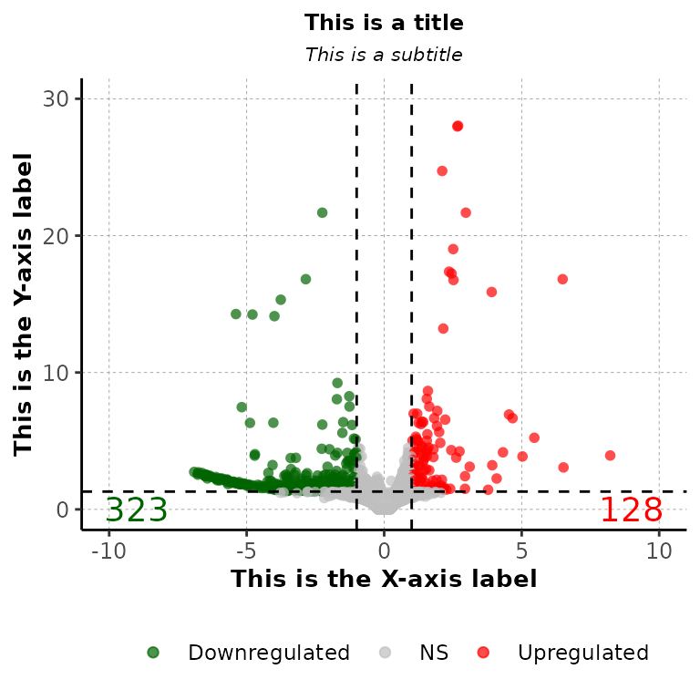
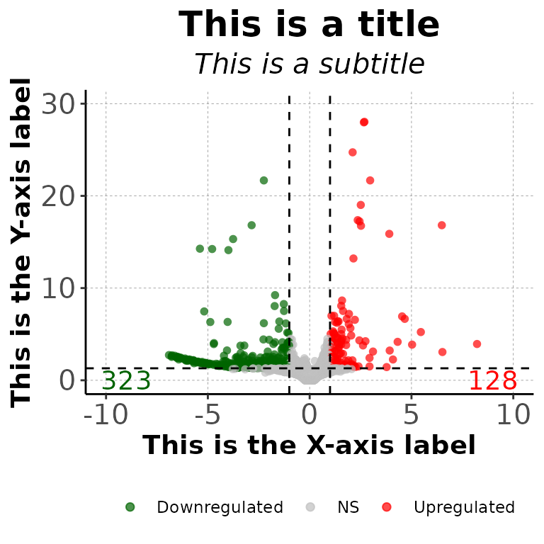
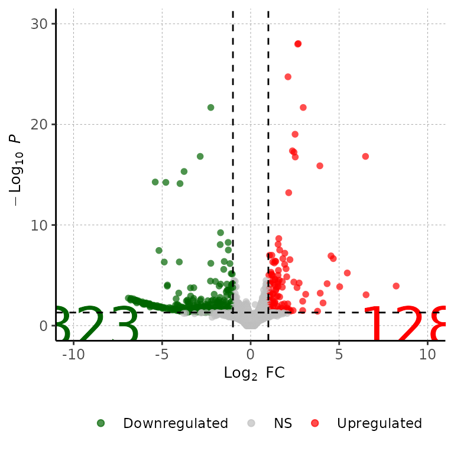
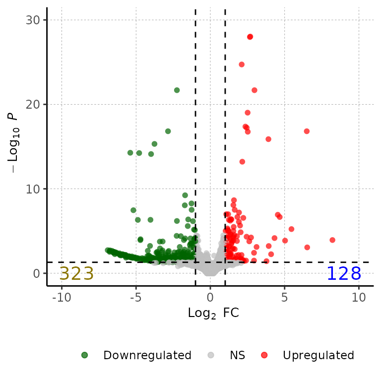
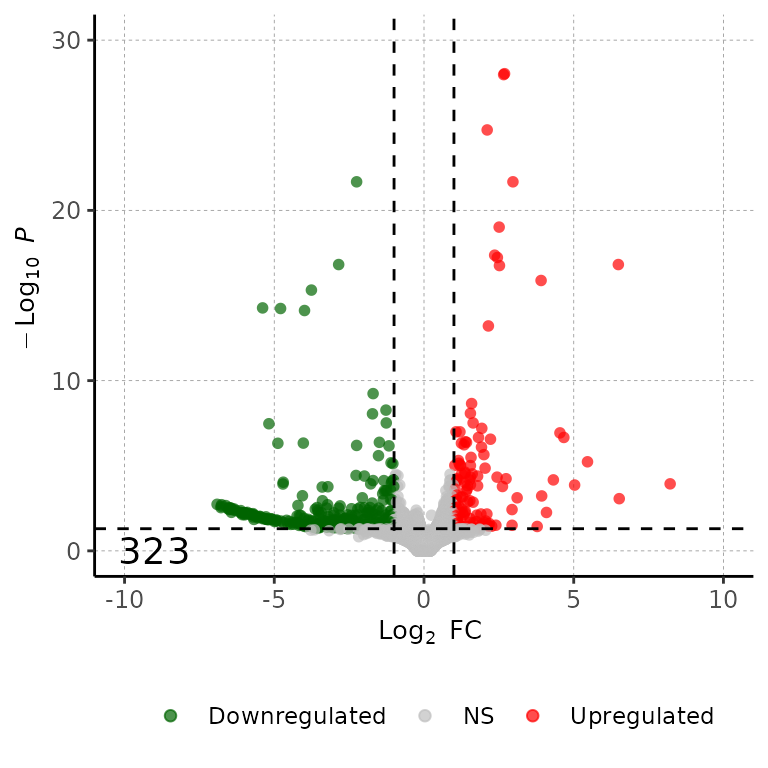
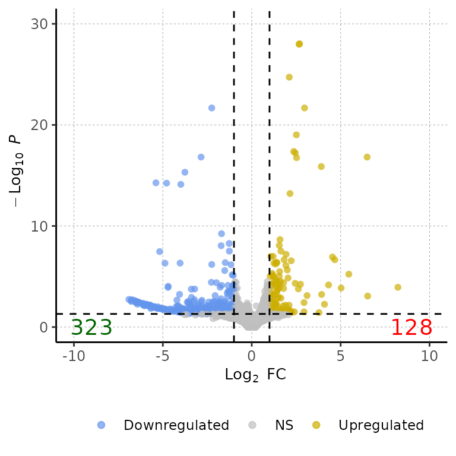
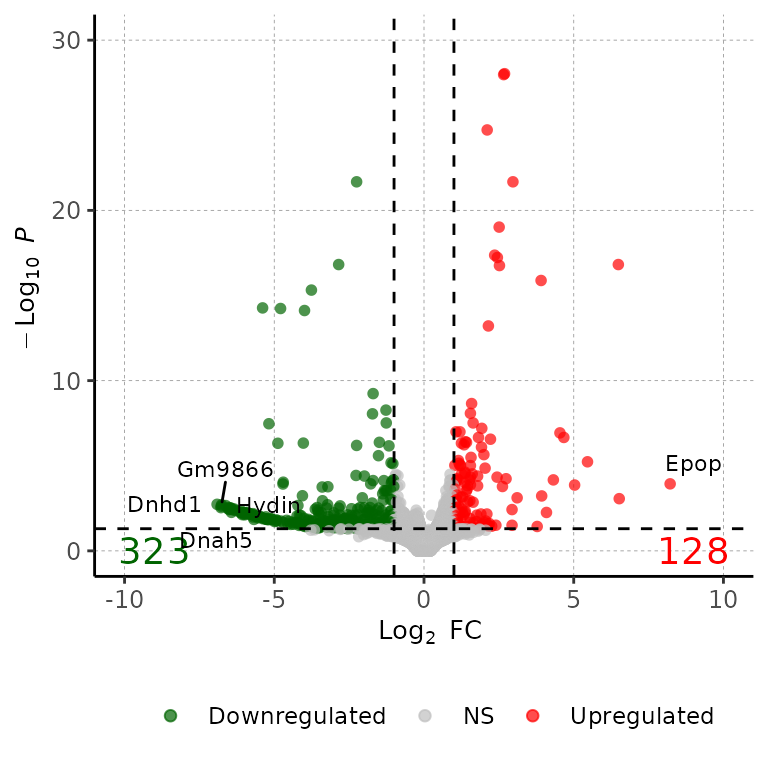
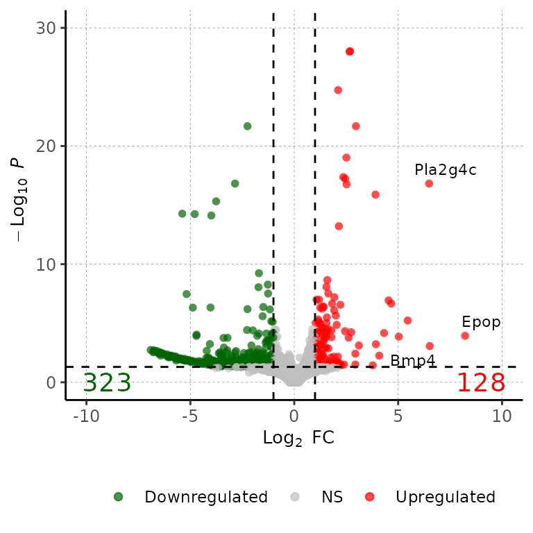
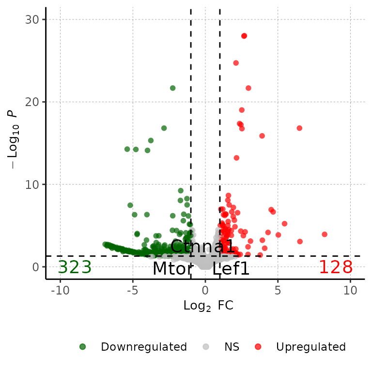
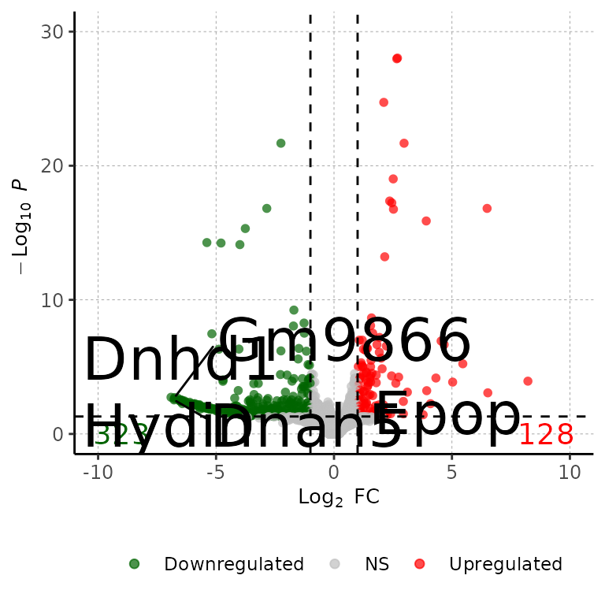

Run volcanoPlot()
volcanoPlot() draws an ggplot2-based volcanoPlot with the Log2(fold change) at the X axis and the -Log10(adjusted p-value) in the Y axis.
Required
As input, barDEGs takes a data frame with the columns Geneid, log2FoldChange, padj and DEG. The DEG column must have the values Upregulated, Downregulated and NS.
# read the dataframes into a list
deg_list <- list.files("../testdata", "diff_exp", full.names = T, recursive = T) %>%
purrr::set_names(paste("cond", 1:3, sep = "")) %>%
purrr::map(~read.delim(.x))
deg_list[[1]] %>% head()## Geneid ENSEMBL log2FoldChange padj DEG
## 1 Gsdmc2 ENSMUSG00000056293.12 2.69 9.334654e-29 Upregulated
## 2 Gsdmc4 ENSMUSG00000055748.12 2.66 1.060432e-28 Upregulated
## 3 Car4 ENSMUSG00000000805.18 2.11 1.883150e-25 Upregulated
## 4 Duoxa2 ENSMUSG00000027225.7 2.97 2.097922e-22 Upregulated
## 5 Neat1 ENSMUSG00000092274.3 -2.25 2.097922e-22 Downregulated
## 6 Gsdmc3 ENSMUSG00000055827.13 2.51 9.601422e-20 Upregulated
Customize plot
Specify titles
volcanoPlot(df = deg_list[[1]], main = "This is a title", sub = "This is a subtitle",
xlab = "This is the X-axis label", ylab = "This is the Y-axis label")
volcanoPlot(df = deg_list[[1]], main = "This is a title", sub = "This is a subtitle",
xlab = "This is the X-axis label", ylab = "This is the Y-axis label",
mainSize = 19, subSize = 15, axisLabelSize = 14,
axisTextSize = 15)
Change DEG numbers
Change size of DEG number labels
volcanoPlot(df = deg_list[[1]], labelSize = 12)
Change color of DEG number labels
volcanoPlot(df = deg_list[[1]], labelColor = c("gold4", "blue"))
volcanoPlot(df = deg_list[[1]], labelColor = c("black"))
Change position of DEG number labels
volcanoPlot(df = deg_list[[1]], labelPos = 30)
Change point colors
volcanoPlot(df = deg_list[[1]], pointColor = c("cornflowerblue", "gray", "gold3"))
Show genes names
5 most significant genes
volcanoPlot(df = deg_list[[1]], degsLabel = T)## Loading required package: ggrepel
Change number of genes to show
volcanoPlot(df = deg_list[[1]], degsLabel = T, degsLabelNum = 20)## Warning: ggrepel: 17 unlabeled data points (too many overlaps). Consider
## increasing max.overlaps
Show wanted genes
genes_to_show <- c("Lef1", "Mtor", "Ctnna1")
volcanoPlot(df = deg_list[[1]], degsLabel = genes_to_show, degsLabelSize = 5)
Change size of gene labels
volcanoPlot(df = deg_list[[1]], degsLabel = T, degsLabelSize = 10)
Further costumization
Since barDEGs() outputs a ggplot2-based scatter plot, it can be further customized with scales or theme, etc.